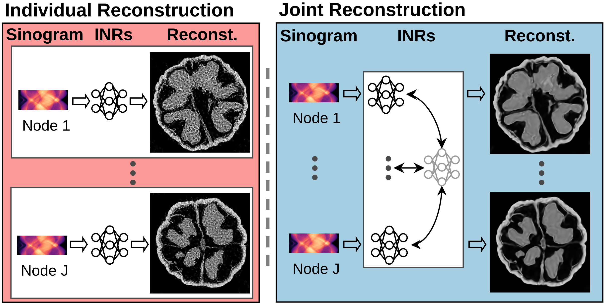
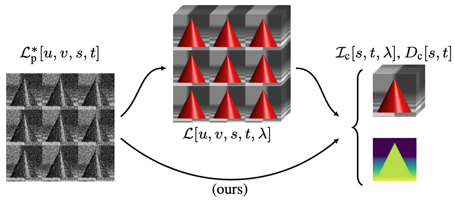

|
Jiayang Shi I'm currently in my third year as a PhD student at Leiden University, located in Leiden, the Netherlands. My supervisors are Daan Pelt and Joost Batenburg. My research is part of the Marie Curie project, xCTing. I focus on integrating machine learning with denoising and artifact reduction techniques for Computed Tomography (CT) imaging. This encompasses tomographic reconstruction and addressing inverse problems in general. My PhD journey began in September 2021. Prior to this, I earned my bachelor's degree in 2013 from Hangzhou, China, and completed my master's in 2021 in Karlsruhe, Germany. Email / Google Scholar / GitHub / LinkedIn |
|
Research |
|  |
Implicit Neural Representations for Robust Joint Sparse-View CT Reconstruction
Jiayang Shi, Junyi Zhu, Daan Pelt, Joost Batenburg, Matthew Blaschko Transactions on Machine Learning Research (TMLR) , 2024 code / openreview / paper A novel Bayesian framework for joint reconstruction of multiple objects from sparse-view CT scans using Implicit Neural Representations (INRs) to improve reconstruction quality. By capturing shared patterns across multiple objects with latent variables, our method enhances the reconstruction of each object, increases robustness to noise, and accelerates the learning process. |
|
SR4ZCT: Self-supervised Through-plane Resolution Enhancement for CT Images with
Arbitrary Resolution and Overlap
Jiayang Shi, Daan Pelt, Joost Batenburg, Machine Learning in Medical Imaging (MLMI) in conjunction with MICCAI , 2023 code / proceeding / paper A self-supervised approach utilizing off-axis training to improve the resolution of through-plane CT scans. This method is trained using in-plane images and applied to through-plane images, offering flexibility with any resolution and overlap. |
|
Multi-stage Deep Learning Artifact Reduction for Computed Tomography
Jiayang Shi, Daan Pelt, Joost Batenburg Under review, 2023 code / arXiv A artifact reduction method for CT images based on deep learning. Three CNNs reduce artifacts in a subsequent manner, targeting different types of artifacts. This method is seamlessly integrated into existing CT pipelines. |
|
LoDoInd: Introducing A Benchmark Low-dose Industrial CT Dataset and Enhancing Denoising with 2.5D Deep Learning Techniques
Jiayang Shi, Omar Elkilany, Andreas Fischer, Alexander Suppes, Daan Pelt, Joost Batenburg International Conference on Industrial Computed Tomography (iCT) , 2024 code / dataset / proceeding / paper A Benchmark Low-dose Industrial CT Dataset Tailored for Deep Learning: This work introduces a dataset specifically designed for industrial CT applications, emphasizing deep learning approaches. It features a comprehensive analysis comparing the effectiveness and efficiency of 2D, 2.5D, and 3D training methodologies in the context of denoising and image enhancement. |
|
Graph Neural Network based Log Anomaly Detection and Explanation
Zhong Li, Jiayang Shi, Matthijs van Leeuwen Under review , 2023 code / arXiv Graph neural network for log anomaly detection. |
 |
Spectral reconstruction and disparity from spatio-spectrally coded light fields via
multi-task deep learning
Maximilian Schambach, Jiayang Shi, Michael Heizmann 3DV , 2021 code / proceeding / arXiv A novel method to reconstruct a spectral central view and its aligned disparity map from spatio-spectrally coded light fields using multi-task deep learning. |
Teaching Assistant |
|
Computational Imaging and Tomography 2022 spring&2024 spring
Statistics for Computer Scientists, 2023 fall Computer Vision, 2024 fall |
Supervised Thesis |
|
Donghang Lyu (master student): Res-Swin: Effective Combination of ResNet and Swin Transformer for
LDCT Denoising
|